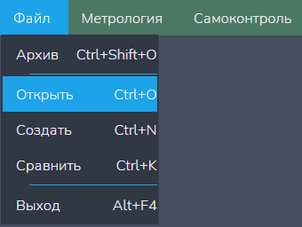
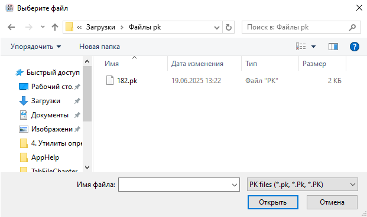
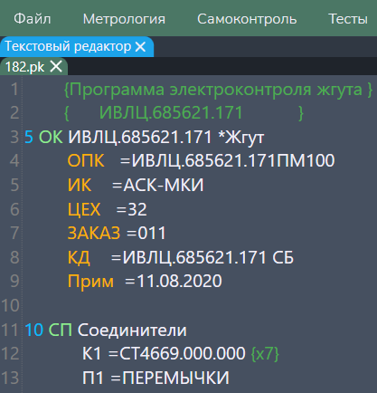

Функция "Открыть"
Данной функцией можно отркыть файлы программ контроля (расширения: *.pk, *.Pk, *.PK).
Путь и вызов
Нахождение в программе
Верхнее меню → "Файл" → "Открыть" (показано на рисунке 1)
Горячие клавишы
Ctrl + OНа изображении показано нахождение данной функции в программе:

Действия после нажатия
После нажатия горячих клавиш или ЛКМ по кнопке "Открыть" открывается файловый менеджер ОС, предлагающий нам выбрыть файл для отркытия (рисунок 2).

После выбора нужного файла он откроется в текстовом редакторе в программе (рисунок 3).
